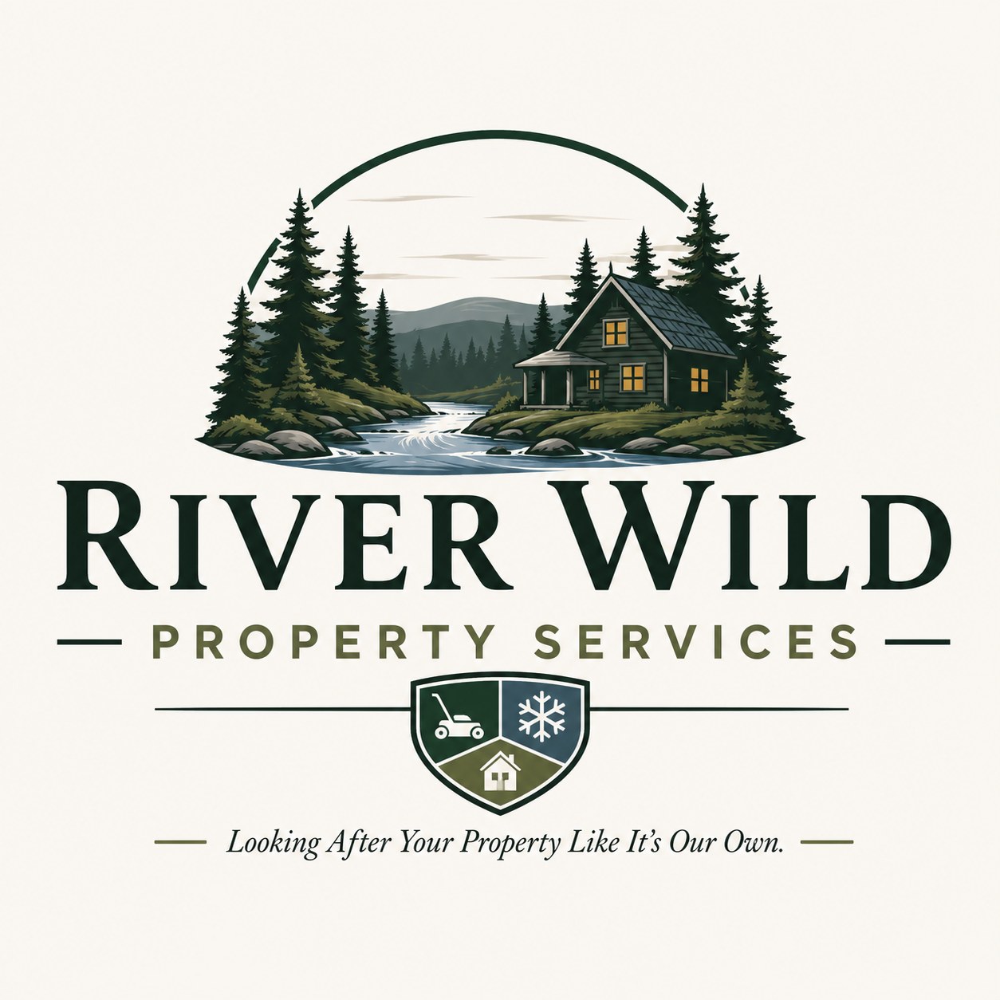
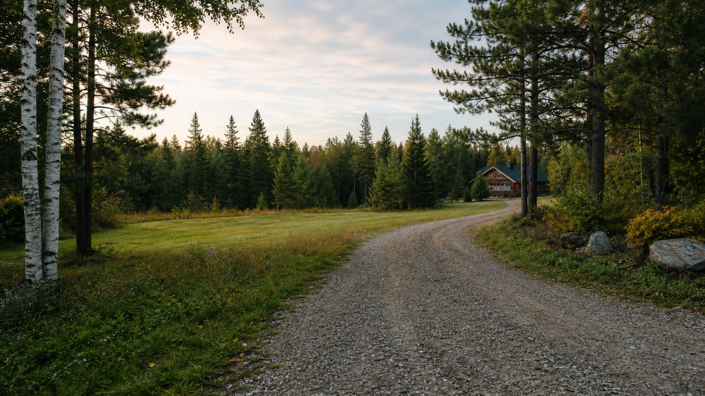

Property Monitoring
Scheduled visits with photos, visible condition checks, and direct updates to the property owner.
- Storm damage and debris checks
- Unauthorized access observations
- Driveway and access conditions

River Wild Property Services, LLC
Michigan Upper Peninsula property care
Reliable property monitoring, outdoor maintenance, cleanup, and inspection support for seasonal homes, cabins, vacant properties, rentals, and recreational land.
Local property care you can depend on
Owning property in the Upper Peninsula can be rewarding, but keeping an eye on it is not always easy when you live out of the area, travel frequently, or only visit seasonally.
River Wild Property Services provides dependable local assistance to check on property, document conditions, complete routine outdoor work, and report potential concerns clearly.
Our services
Scheduled visits with photos, visible condition checks, and direct updates to the property owner.
Routine outdoor work to keep property looking maintained, visible, and accessible.
Seasonal, storm, and outdoor cleanup for cabins, homes, garages, outbuildings, and land.
Scheduled checks before you arrive or after you leave to make seasonal visits easier.
Property check options
A basic exterior observation from the driveway or accessible roadway.
A closer visual review of accessible exterior areas around buildings.
A more detailed visit tailored to your property and instructions.
Property monitoring is a visual observation service and is not a substitute for a licensed building, home, electrical, plumbing, or structural inspection.
Properties we serve
Whether your property is lakefront, wooded, rural, vacant, rented, or visited only part of the year, River Wild can help you stay informed.
Why choose River Wild
We understand the weather, terrain, travel distances, and seasonal property-care challenges of the U.P.
Owners receive photos, observations, and notification when something appears to need attention.
Choose one-time visits, recurring monitoring, seasonal maintenance, or a custom care plan.
Straightforward observations and useful service without unnecessary work or complicated contracts.
Service area
Availability and pricing depend on location, travel distance, service frequency, property size, and the work requested. Properties farther from normal service routes may include mileage or travel charges.
Request a quote
Owning a cabin, seasonal home, rental, or vacant property can be difficult when you are not nearby. River Wild Property Services is a small, locally owned family business committed to giving property owners dependable service, honest communication, and peace of mind.
When you contact us, you are not reaching a call center or a large national company. You are working directly with a local family that understands the challenges of maintaining property in Michigan's Upper Peninsula.
Tell us a little about your property, where it is located, and how we can help. We will work with you to develop a practical service plan based on your needs, schedule, and budget.